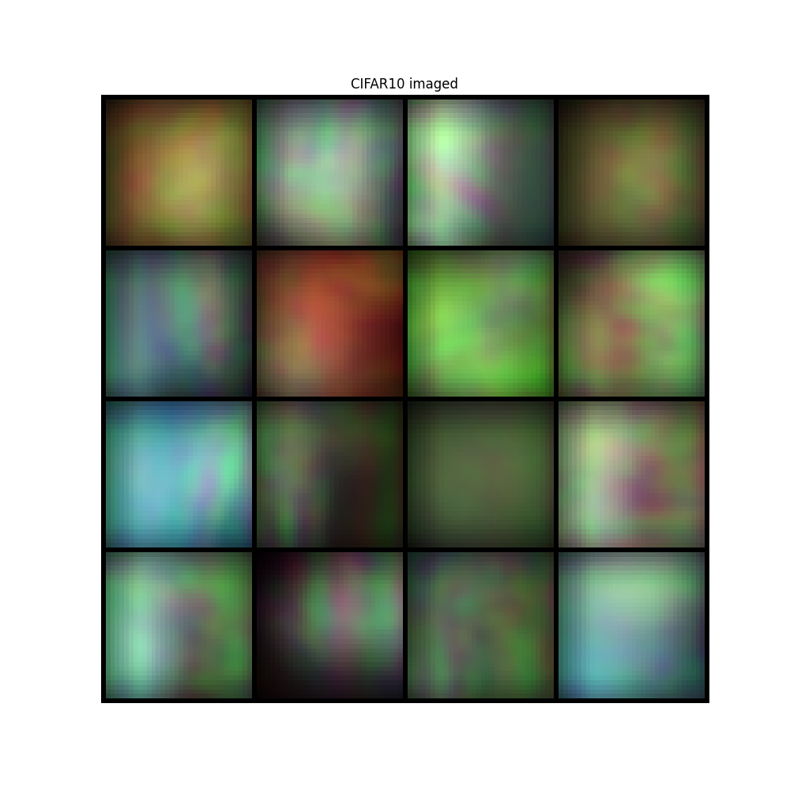
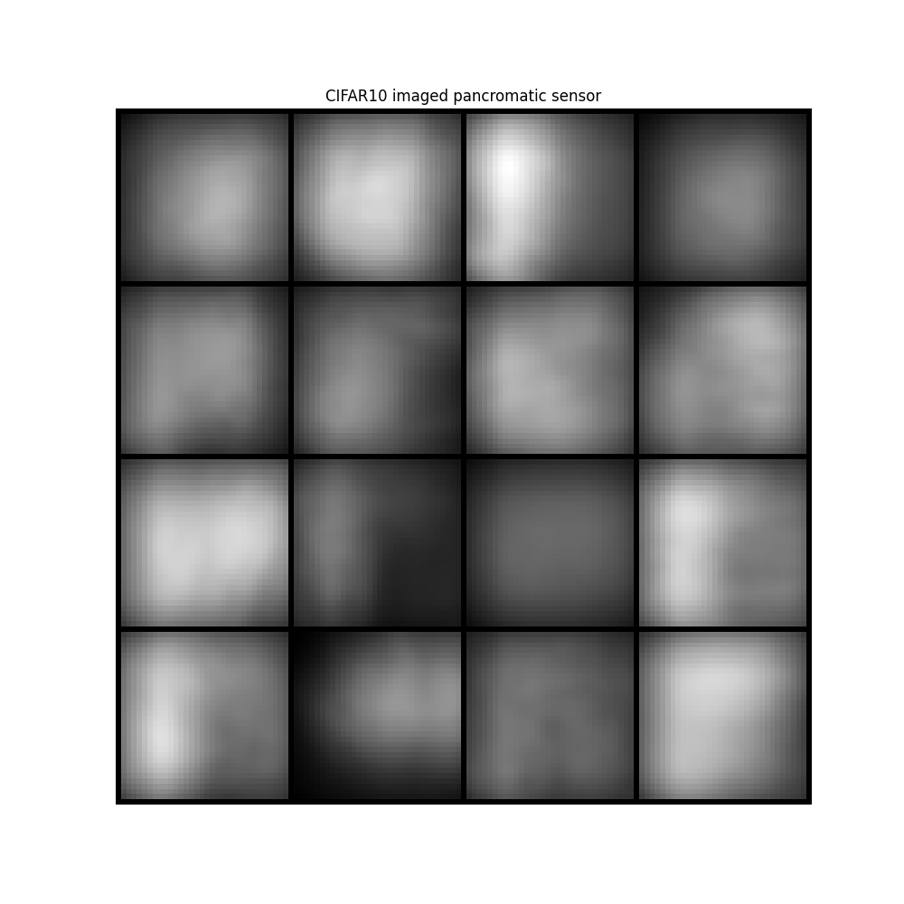

Note
Go to the end to download the full example code.
Demo DOEs.
In this example we show how to use a DOE,
In progress…
Select Working Directory and Device
import os
from torch.utils.data import DataLoader
os.chdir(os.path.dirname(os.getcwd()))
print("Current Working Directory ", os.getcwd())
import numpy as np
from colibri.optics.functional import (
psf_single_doe_spectral,
convolutional_sensing,
ideal_panchromatic_sensor,
)
from colibri.optics.sota_does import (
spiral_doe,
conventional_lens,
spiral_refractive_index,
nbk7_refractive_index,
)
from colibri.optics import SingleDOESpectral
from colibri import seed_everything
# General imports
import matplotlib.pyplot as plt
import torch
import os
seed_everything()
manual_device = "cpu"
doe_size = (100, 100)
img_size = (200, 200)
type_doe = "spiral" # spiral, conventional_lens
convolution_domain = "fourier" # signal, fourier
type_wave_propagation = "angular_spectrum" # fresnel, angular_spectrum, fraunhofer
wavelengths = torch.Tensor([450, 550, 650]) * 1e-9
# Check GPU support
print("GPU support: ", torch.cuda.is_available())
if manual_device:
device = manual_device
else:
device = torch.device("cuda:0" if torch.cuda.is_available() else "cpu")
Current Working Directory /home/runner/work/pycolibri/pycolibri
GPU support: False
Load dataset
from colibri.data.datasets import CustomDataset
name = "cifar10"
path = "."
batch_size = 16
dataset = CustomDataset(name, path)
dataset_loader = DataLoader(dataset, batch_size=batch_size, shuffle=False, num_workers=0)
Visualize dataset
from torchvision.utils import make_grid
import torchvision
sample = next(iter(dataset_loader))["input"]
img = make_grid(sample[:32], nrow=8, padding=1, normalize=True, scale_each=False, pad_value=0)
plt.figure(figsize=(10, 10))
plt.imshow(img.permute(1, 2, 0))
plt.title("CIFAR10 dataset")
plt.axis("off")
plt.show()
Optics forward model
Define the forward operators \(\mathbf{y} = \mathbf{H}_\phi \mathbf{x}\), in this case, the CASSI and SPC forward models. Each optics model can comptute the forward and backward operators i.e., \(\mathbf{y} = \mathbf{H}_\phi \mathbf{x}\) and \(\mathbf{x} = \mathbf{H}^T_\phi \mathbf{y}\).
# source_distance = np.inf
if type_wave_propagation == "fraunhofer":
source_distance = np.inf
else:
source_distance = 1 # meters
if type_doe == "spiral":
radius_doe = 0.5e-3
sensor_distance = 50e-3
pixel_size = (2 * radius_doe) / np.min(doe_size)
height_map, aperture = spiral_doe(
M=doe_size[0],
N=doe_size[1],
number_spirals=3,
radius=radius_doe,
focal=50e-3,
start_w=450e-9,
end_w=650e-9,
)
refractive_index = spiral_refractive_index
else:
radius_doe = 0.5e-3 # .0e-3
focal = 50e-3
if source_distance == np.inf:
sensor_distance = focal # 0.88
else:
sensor_distance = 1 / (1 / (focal) - 1 / (source_distance))
pixel_size = (2 * radius_doe) / np.min(doe_size)
height_map, aperture = conventional_lens(
M=doe_size[0], N=doe_size[1], focal=focal, radius=radius_doe
)
refractive_index = nbk7_refractive_index
fig, ax = plt.subplots(1, 2, figsize=(10, 10))
ax[0].imshow(height_map, cmap="viridis")
ax[0].set_title("Height map")
ax[1].imshow(aperture, cmap="plasma")
ax[1].set_title("Aperture map")
plt.show()
Functional API for DOEs
Define the recovery model \(\mathbf{x} = \mathcal{G}_\theta( \mathbf{y})\), in this case, a simple U-Net model. You can add you custom model by using the :meth: build_network function. Additionally we define the end-to-end model that combines the forward and recovery models. Define the loss function \(\mathcal{L}\), and the regularizers \(\mathcal{R}\) for the forward and recovery models.
psf = psf_single_doe_spectral(
height_map=height_map,
aperture=aperture,
refractive_index=refractive_index,
wavelengths=wavelengths,
source_distance=source_distance,
sensor_distance=sensor_distance,
pixel_size=pixel_size,
approximation=type_wave_propagation,
)
fig, ax = plt.subplots(1, 1, figsize=(10, 10))
ax.imshow(((psf - psf.min()) / (psf.max() - psf.min())).permute(1, 2, 0), cmap="plasma")
image = convolutional_sensing(sample, psf, domain=convolution_domain)
img = make_grid(image, nrow=4, padding=1, normalize=True, scale_each=False, pad_value=0)
plt.figure(figsize=(10, 10))
plt.imshow(img.permute(1, 2, 0))
plt.title("CIFAR10 imaged")
plt.axis("off")
plt.show()
image = ideal_panchromatic_sensor(image)
img = make_grid(image, nrow=4, padding=1, normalize=True, scale_each=False, pad_value=0)
plt.figure(figsize=(10, 10))
plt.imshow(img.permute(1, 2, 0))
plt.title("CIFAR10 imaged pancromatic sensor")
plt.axis("off")
plt.show()


DOE Class
acquisition_model = SingleDOESpectral(
input_shape=sample.shape[1:],
height_map=height_map,
aperture=aperture,
wavelengths=wavelengths,
source_distance=source_distance,
sensor_distance=sensor_distance,
sensor_spectral_sensitivity=lambda x: x,
pixel_size=pixel_size,
doe_refractive_index=refractive_index,
approximation=type_wave_propagation,
domain=convolution_domain,
trainable=False,
)
psf = acquisition_model.get_psf()
fig, ax = plt.subplots(1, 1, figsize=(10, 10))
ax.imshow(((psf - psf.min()) / (psf.max() - psf.min())).permute(1, 2, 0), cmap="plasma")
ax.set_title("RGB PSF")
plt.show()
image = acquisition_model(sample)
img = make_grid(image, nrow=4, padding=1, normalize=True, scale_each=False, pad_value=0)
plt.figure(figsize=(10, 10))
plt.imshow(img.permute(1, 2, 0))
plt.title("CIFAR10 imaged")
plt.axis("off")
plt.show()
image = ideal_panchromatic_sensor(image)
img = make_grid(image, nrow=4, padding=1, normalize=True, scale_each=False, pad_value=0)
plt.figure(figsize=(10, 10))
plt.imshow(img.permute(1, 2, 0))
plt.title("CIFAR10 imaged pancromatic sensor")
plt.axis("off")
plt.show()

- 
- 
Total running time of the script: (0 minutes 1.800 seconds)